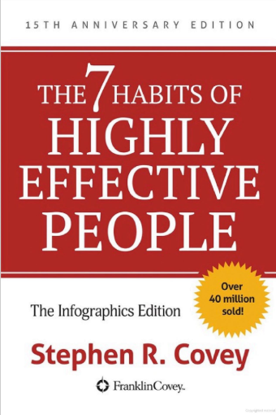
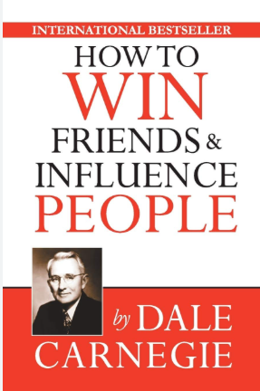
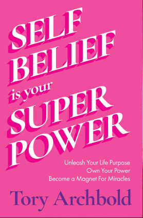

STAR LMS - Login
Login
STAR LMS - Register
Register
STAR LMS - Library
Self-Discipline
Atomic Habits
The Power of Habit
Deep Work
Career Growth

The 7 Habits of Highly Effective People

How to Win Friends and Influence People
Lean In
Self-Belief and Belief
The Power of Self-Confidence

You Are a Badass
The Confidence Code
Soft Skills
Crucial Conversations
Never Split the Difference
The Art of Communicating
Management Skills
The One Minute Manager
Drive
Radical Candor
Leadership Skills
Leaders Eat Last
The 21 Irrefutable Laws of Leadership
Dare to Lead
Communication Skills
Talk Like TED
Made to Stick
The Quick and Easy Way to Effective Speaking
Emotional Intelligence
Emotional Intelligence
Empathy
Social Intelligence
Negotiation Skills
Getting to Yes
Bargaining for Advantage
Influence
Teamwork and Collaboration
The Five Dysfunctions of a Team
Collaboration
Team of Teams
Personal Branding
Personal Branding
Brand Yourself
The Brand Called You
Time Management
Getting Things Done
Eat That Frog!
The 80/20 Principle
Customer Service
Raving Fans
The Customer Rules
Delivering Happiness
Decision Making
Thinking, Fast and Slow
Decisive
Blink
Problem Solving
A Whack on the Side of the Head
Problem Solving 101
The Art of Problem Solving
Stress Management
The Upside of Stress
Don't Sweat the Small Stuff
Burnout
Creativity and Innovation
The Innovator's Dilemma
Creative Confidence
Steal Like an Artist
Adaptability
Who Moved My Cheese?
Antifragile
Adapt
Ethics and Integrity
The Speed of Trust
Lying
The Ethics of Excellence
Financial Literacy
Rich Dad Poor Dad
The Millionaire Next Door
Think and Grow Rich
First
Previous
Next
Last
Home
Time: 00:00
Let's Check Your Understanding
Time: 00:00
Your Results
Download PDF
Check Answers
Home
Answer Review
Home